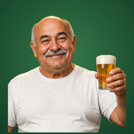

Painel do dono do bar
Contas: só a conta do dono vê este painel. "Ativo" = entrou no jogo naquele dia (registro começou em 19/10/2026; antes disso conta o dia do cadastro e as partidas online). "Voltou no dia seguinte" = entre quem se cadastrou até ontem, quantos entraram de novo no dia seguinte ao cadastro.